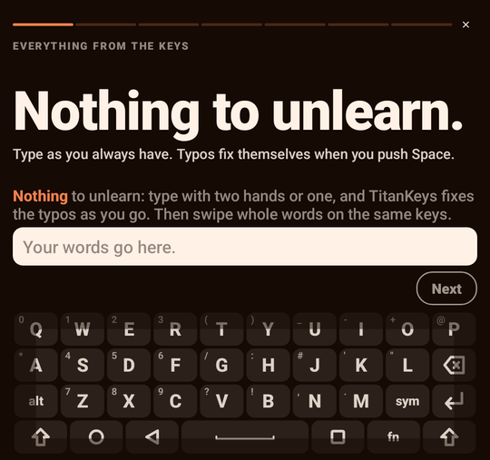
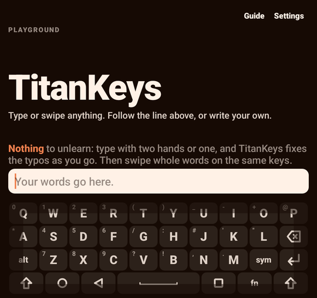
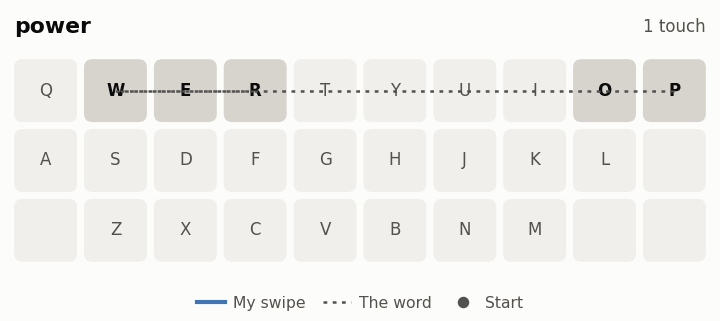
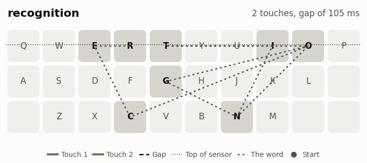
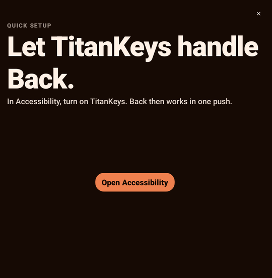

Nothing to unlearn
Type with two thumbs or one. Press Space and TitanKeys fixes the typo in the word you just typed.
Built for Titan 2 Elite
The keys your Titan deserves.
The keyboard your Titan shipped with is kinda shit. This one's made only for the Titan 2 Elite. Type like you always have, then swipe whole words on the same keys.
The Titan's keys are a touchpad too. TitanKeys uses all of it, so your thumbs stay on the keys. The guide in the app walks you through each trick on the real keyboard.

Type with two thumbs or one. Press Space and TitanKeys fixes the typo in the word you just typed.

Slide across the letters of a word without pressing, then lift. Slip off the top of the keys mid-word? Come back and keep going. It's still the same word.
The strip above the keys shows what else your swipe could've been. Tap the right one. Before you type, it guesses your next word.
Flick left from Backspace to delete a word. Keep your thumb down and it keeps going.
Tap Space twice and hold the second tap, then lean left or right to move the cursor. Tap it three times to select words instead.
Hold a letter for the symbol printed on it. Press Sym for everything else.
Press Sym twice for emoji. In the panel, Alt opens quick settings, with a letter for each one.
Swipe engine 2.0 was trained on real swipes from the Titan's touchpad. A small language model reads your sentence, and a ranker picks the three words you most likely meant. It all runs on your phone.
| Right word first | Atlas | TitanKeys 1.2 | TitanKeys 2.0 |
|---|---|---|---|
| 126 words in real sentences | 68% | 84% | 91% |
| 540 swipes held back from tuning | – | 72.6% | 78.9% |


That's one person's swipes on one phone, so yours might do better or worse. The recordings and the tools to check them are in the source.

TitanKeys installs next to Atlas and leaves its saved words alone. It only works on the Titan 2 Elite.
Nope. It's made for the Titan 2 Elite's keys and touchpad, and it needs both.
Yes. It's free and open source, under the GPL-3.0. Some parts use the FUTO Source First License, so it can only be shared for free, for non-commercial use.
TitanKeys started from Atlas by Julian Hall, and it only exists because Julian built it and shared it. Atlas stays simple. TitanKeys goes further to get the most out of the Titan 2 Elite, like swipe engine 2.0 and one-handed swipes. If you'd rather keep it simple, Atlas is a great pick.
Not to type. It only goes online for news and, if you agree, to share swipes. The privacy policy says exactly what's sent.
Open an issue on GitHub, or use Settings > Send feedback in the app. Ideas are welcome there too.
TitanKeys is built on the work of Atlas by Julian Hall, Ink, FUTO Swipe and the FUTO Keyboard, CleverKeys, DistilGPT-2, ONNX Runtime, Pastiera, Numen, the AOSP dictionaries and Inter. Every licence is in the source.